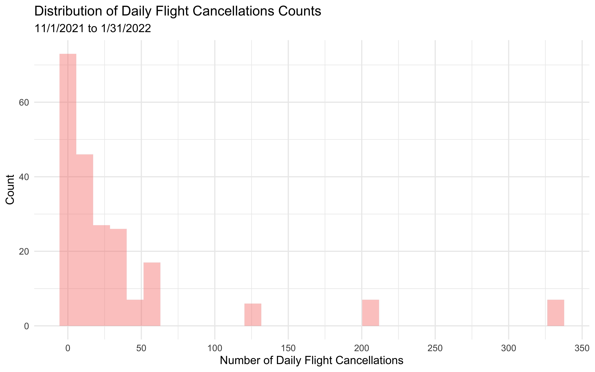
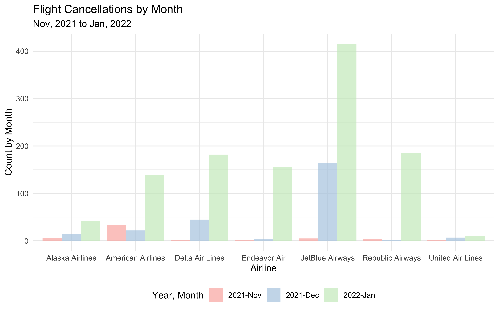
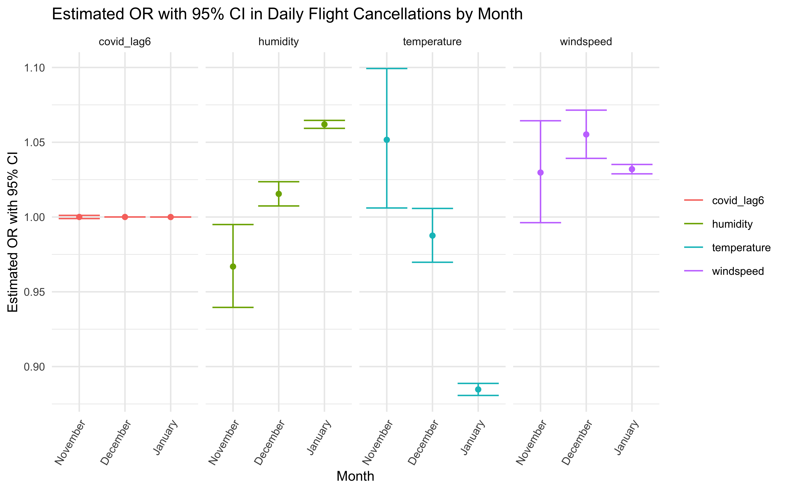

Poisson Regression
We wanted to investigate factors that were related to and might be used to predict daily flight cancellation count. We hypothesized that there could be daily flight cancellations due to COVID breakouts or some specific weather conditions.
Data Description
We would like to explore the relationship between cancellation counts and some predictors. The number of cancellations each day is therefore regarded as the result (dependent variable), and exposures of interest are regarded as the independent variables.
daily_cancel: daily flight cancellation counts in JFK airportairline_name: domestic airlineyear_month: the date format in “Year Month”temperature: daily average dry bulb temperature (°F)humidity: daily average relative humidity (%)windspeed: daily average relative windspeed (mph)covid_case: new daily cases of COVID-19covid_lag6: daily cases of COVID-19 with 6 days time lag
Distribution of Daily Flight Cancellations Counts
cancel_tidy %>%
ggplot(aes(x = daily_cancel, fill = "rgb(255, 65, 54)")) +
geom_histogram(alpha = .4) +
labs(
x = "Number of Daily Flight Cancellations",
y = "Count",
title = "Distribution of Daily Flight Cancellations Counts",
subtitle = "11/1/2021 to 1/31/2022"
) +
scale_x_continuous(
n.breaks = 10
) +
theme(
legend.position = "none"
)
From 11/1/2021 to 1/31/2022, the minimum number of daily cancellations is 1, while the daily cancellations can reach up to as high as 333.
Stratification Factors
We discovered that the cancellation count each month varied by month and airline. Monthly flight cancellations were the highest in January 2022, followed by December and November 2021. Monthly cancellation rates fluctuate greatly amongst airlines as well. As a result, we used the month and the airline as stratification factors.
cancel_airline %>%
arrange(airline_name) %>%
pivot_wider(
names_from = airline_name,
values_from = Total_number_of_cancellation) %>%
knitr::kable(
col.names = c("Year, Month", "Alaska Airlines", "American Airlines", "Delta Air Lines", "Endeavor Air",
"JetBlue Airways", "Republic Airways", "United Air Lines")) %>%
kableExtra::kable_styling(bootstrap_options = "hover")| Year, Month | Alaska Airlines | American Airlines | Delta Air Lines | Endeavor Air | JetBlue Airways | Republic Airways | United Air Lines |
|---|---|---|---|---|---|---|---|
| 2021-Nov | 6 | 33 | 2 | 1 | 5 | 4 | 1 |
| 2021-Dec | 15 | 22 | 45 | 4 | 165 | 2 | 7 |
| 2022-Jan | 41 | 139 | 182 | 156 | 416 | 185 | 10 |
cancel_airline %>%
mutate(year_month = fct_relevel(year_month, "2021-Nov", "2021-Dec", "2022-Jan")) %>%
ggplot(aes(x = year_month, y = Total_number_of_cancellation, fill = airline_name)) +
geom_col(position = "dodge", alpha = .7) +
scale_fill_brewer(palette = "Pastel1") +
labs(
x = "",
y = "Count by Month",
fill = "Airline",
title = "Flight Cancellations by Month",
subtitle = "Nov, 2021 to Jan, 2022"
)cancel_airline %>%
mutate(year_month = fct_relevel(year_month, "2021-Nov", "2021-Dec", "2022-Jan")) %>%
ggplot(aes(x = airline_name, y = Total_number_of_cancellation, fill = year_month)) +
geom_col(position = "dodge", alpha = .7) +
scale_fill_brewer(palette = "Pastel1") +
labs(
x = "Airline",
y = "Count by Month",
fill = "Year, Month",
title = "Flight Cancellations by Month",
subtitle = "Nov, 2021 to Jan, 2022"
)
Lagging COVID Cases
We hypothesized that the time trend of daily flight cancellations and COVID-19 cases did not coincide with one other. The rises of COVID-19 cases frequently took some time to affect our daily lives, including flight cancellations. Thus, we created new variables regarding COVID cases count with time lag.
cancel_covid = cancel_tidy %>%
dplyr::select(date, daily_cancel, covid_case) %>%
distinct()
cancel_plot = cancel_covid %>%
mutate(text_label = str_c("Date: ", date, "\nCancellation Count: ", daily_cancel)) %>%
plot_ly(x = ~date, y = ~daily_cancel, type = "scatter", mode = "lines+markers",
text = ~text_label, alpha = 0.5, hoverinfo = "text") %>%
layout(annotations = list(x = 0.1 , y = 0.8, text = "Daily Flight Cncellations", showarrow = F,
xref = "paper", yref = "paper"))
covid_plot <- cancel_covid %>%
mutate(text_label = str_c("Date: ", date, "\nCOVID Cases Count: ", covid_case)) %>%
plot_ly(
x = ~date, y = ~covid_case, type = "scatter", mode = "lines+markers",
text = ~text_label, alpha = 0.5, hoverinfo = "text") %>%
layout(annotations = list(x = 0.1 , y = 0.8, text = "Daily COVID Cases", showarrow = F,
xref = "paper", yref = "paper"))
scatter_plot <- subplot(cancel_plot, covid_plot, nrows = 2, shareX = TRUE) %>%
layout(title = list(text = "Time Trend of Daily Cancellations vs. Daily COVID Cases"),
xaxis = list(title = "Date"),
showlegend = FALSE)
scatter_plotWe used the lag selection criteria and Akaike information criterion
(AIC) to select 6 days as the optimal time lag. Then, we constructed a
new variable named covid_lag6, equivalent to the value of
COVID-19 cases with a 6-day time lag.
Poisson Regression Model

poisson = glm(daily_cancel ~ temperature + humidity + windspeed + covid_lag6,
family = "poisson",
data = cancel_tidy)
poisson %>%
broom::tidy() %>%
mutate(OR = exp(estimate),
p.value = format(p.value, scientific = TRUE, digits = 3)
) %>%
dplyr::select(term, estimate, OR, p.value) %>%
knitr::kable(digits = 3, col.names = c("Terms", "Estimate (log(OR))", "Estimated adjusted OR", "P-value")) %>%
kable_styling()| Terms | Estimate (log(OR)) | Estimated adjusted OR | P-value |
|---|---|---|---|
| (Intercept) | 2.443 | 11.509 | 1.41e-195 |
| temperature | -0.119 | 0.888 | 0.00e+00 |
| humidity | 0.057 | 1.059 | 0.00e+00 |
| windspeed | 0.036 | 1.036 | 2.27e-154 |
| covid_lag6 | 0.000 | 1.000 | 2.37e-05 |
The above is the outcome of Poisson regression. All predictor coefficients are statistically significant (associated with a p-value of 0.05), indicating that temperature, humidity, windspeed, and COVID-19 cases indeed impact the rate of daily flight cancellation.
Exponentiating the Poisson regression coefficient provides the
incidence rate ratio of daily flight cancellation. Take
temperature as an example; its parameter estimate is
-0.119, which means that increasing the temperature by one degree
Fahrenheit should decrease the difference in the logs of predicted daily
flight cancellations by 0.119 occurrences while holding the other
variables in the model constant.
We obtained an estimated adjusted OR after exponentiating all of the
coefficients. Again, take temperature as an example: a
one-degree Fahrenheit increase in temperature is expected to reduce the
estimated rate ratio of daily flight cancellations by a factor of 0.888
while holding all other variables constant in the model.
Stratified by Month
cancel_tidy %>%
nest(df = -month) %>%
mutate(
models = map(.x = df, ~ glm(daily_cancel ~ temperature + humidity + windspeed + covid_lag6,family = "poisson", data = .x)),
results = map(models, broom::tidy)
) %>%
unnest(results) %>%
dplyr::select(month, term, estimate) %>%
mutate(term = fct_inorder(term)) %>%
pivot_wider(
names_from = term,
values_from = estimate) %>%
knitr::kable(digits = 6) %>%
kable_styling()| month | (Intercept) | temperature | humidity | windspeed | covid_lag6 |
|---|---|---|---|---|---|
| November | -0.289407 | 0.050352 | -0.033685 | 0.029304 | 3.3e-05 |
| December | 0.136457 | -0.012493 | 0.015354 | 0.053751 | 3.2e-05 |
| January | 2.570463 | -0.122494 | 0.060112 | 0.031507 | 0.0e+00 |
OR and 95% CI
Overview of estimated OR, 95% CI and P-value.
poisson_by_month = cancel_tidy %>%
nest(data = -month) %>%
mutate(
models = map(.x = data, ~glm(daily_cancel ~ temperature + humidity + windspeed + covid_lag6, family = "poisson", data = .x)),
results = map(models, broom::tidy)
) %>%
dplyr::select(month, results) %>%
unnest(results) %>%
mutate(
OR = exp(estimate),
CI_lower = exp(estimate - 1.96 * std.error),
CI_upper = exp(estimate + 1.96 * std.error),
p.value = format(p.value, scientific = TRUE, digits = 3)
) %>%
dplyr::select(month, term, OR, CI_lower,CI_upper, p.value)
poisson_by_month %>%
filter(term != "(Intercept)" ) %>%
knitr::kable(digits = 3, align = "llccc", col.names = c("Month", "Terms", "Estimated adjusted OR", "CI lower bound", "CI upper bound", "P-value")) %>%
kable_styling()| Month | Terms | Estimated adjusted OR | CI lower bound | CI upper bound | P-value |
|---|---|---|---|---|---|
| November | temperature | 1.052 | 1.006 | 1.099 | 2.60e-02 |
| November | humidity | 0.967 | 0.940 | 0.995 | 2.12e-02 |
| November | windspeed | 1.030 | 0.996 | 1.064 | 8.25e-02 |
| November | covid_lag6 | 1.000 | 0.999 | 1.001 | 9.52e-01 |
| December | temperature | 0.988 | 0.970 | 1.006 | 1.79e-01 |
| December | humidity | 1.015 | 1.007 | 1.024 | 1.62e-04 |
| December | windspeed | 1.055 | 1.039 | 1.071 | 5.33e-12 |
| December | covid_lag6 | 1.000 | 1.000 | 1.000 | 2.51e-33 |
| January | temperature | 0.885 | 0.881 | 0.889 | 0.00e+00 |
| January | humidity | 1.062 | 1.059 | 1.065 | 0.00e+00 |
| January | windspeed | 1.032 | 1.029 | 1.035 | 4.06e-92 |
| January | covid_lag6 | 1.000 | 1.000 | 1.000 | 8.81e-01 |
Plot
poisson_by_month %>%
filter(term != "(Intercept)") %>%
mutate(month = fct_relevel(month, "November", "December", "January")) %>%
ggplot(aes(x = month, y = OR, color = term)) +
geom_point(show.legend = FALSE, aes()) +
geom_errorbar(aes(ymin = CI_lower,
ymax = CI_upper)) +
labs(
title = "Estimated OR with 95% CI in Daily Flight Cancellation by Month",
x = "Month",
y = "Estimated OR with CI"
) +
theme(legend.position = "right", legend.title = element_blank(),
text = element_text(size = 10),
axis.text.x = element_text(angle = 60, hjust = 1, size = 8)) +
facet_grid(. ~ term)
Stratified by Airline
cancel_tidy %>%
nest(df = -airline_name) %>%
mutate(
models = map(.x = df, ~ glm(daily_cancel ~ temperature + humidity + windspeed + covid_lag6,family = "poisson", data = .x)),
results = map(models, broom::tidy)
) %>%
unnest(results) %>%
dplyr::select(airline_name, term, estimate) %>%
mutate(term = fct_inorder(term)) %>%
pivot_wider(
names_from = term,
values_from = estimate) %>%
knitr::kable(digits = 6) %>%
kable_styling()| airline_name | (Intercept) | temperature | humidity | windspeed | covid_lag6 |
|---|---|---|---|---|---|
| American Airlines | 1.377950 | -0.119697 | 0.063910 | 0.048125 | 8e-06 |
| Alaska Airlines | 3.116599 | -0.110591 | 0.045749 | 0.035340 | 3e-06 |
| JetBlue Airways | 1.987016 | -0.130157 | 0.068785 | 0.031199 | 4e-06 |
| Delta Air Lines | 3.122657 | -0.101793 | 0.044541 | 0.032940 | -4e-06 |
| Endeavor Air | 2.736109 | -0.133060 | 0.071020 | 0.015299 | 5e-06 |
| Republic Airways | 2.102555 | -0.128872 | 0.059484 | 0.046475 | 9e-06 |
| United Air Lines | 3.431154 | -0.077203 | 0.029393 | 0.042199 | -5e-06 |
OR and 95% CI
poisson_by_airline = cancel_tidy %>%
nest(data = -airline_name) %>%
mutate(
models = map(.x = data, ~glm(daily_cancel ~ temperature + humidity + windspeed + covid_lag6, family = "poisson", data = .x)),
results = map(models, broom::tidy)
) %>%
dplyr::select(airline_name, results) %>%
unnest(results) %>%
mutate(
OR = exp(estimate),
CI_lower = exp(estimate - 1.96 * std.error),
CI_upper = exp(estimate + 1.96 * std.error),
p.value = format(p.value, scientific = TRUE, digits = 3)
) %>%
dplyr::select(airline_name, term, OR, CI_lower,CI_upper, p.value)
poisson_by_airline %>%
filter(term != "(Intercept)" ) %>%
knitr::kable(digits = 3,
align = "llccc",
col.names = c("Airline Name", "Terms", "Estimated adjusted OR", "CI lower bound", "CI upper bound", "P-value")) %>%
kable_styling()| Airline Name | Terms | Estimated adjusted OR | CI lower bound | CI upper bound | P-value |
|---|---|---|---|---|---|
| American Airlines | temperature | 0.887 | 0.880 | 0.894 | 1.14e-196 |
| American Airlines | humidity | 1.066 | 1.061 | 1.071 | 1.17e-131 |
| American Airlines | windspeed | 1.049 | 1.042 | 1.056 | 1.09e-46 |
| American Airlines | covid_lag6 | 1.000 | 1.000 | 1.000 | 1.43e-04 |
| Alaska Airlines | temperature | 0.895 | 0.888 | 0.903 | 5.56e-139 |
| Alaska Airlines | humidity | 1.047 | 1.041 | 1.053 | 4.36e-57 |
| Alaska Airlines | windspeed | 1.036 | 1.028 | 1.044 | 2.99e-19 |
| Alaska Airlines | covid_lag6 | 1.000 | 1.000 | 1.000 | 2.13e-01 |
| JetBlue Airways | temperature | 0.878 | 0.871 | 0.885 | 2.37e-212 |
| JetBlue Airways | humidity | 1.071 | 1.066 | 1.076 | 5.54e-170 |
| JetBlue Airways | windspeed | 1.032 | 1.025 | 1.038 | 4.61e-23 |
| JetBlue Airways | covid_lag6 | 1.000 | 1.000 | 1.000 | 6.23e-02 |
| Delta Air Lines | temperature | 0.903 | 0.894 | 0.912 | 1.62e-85 |
| Delta Air Lines | humidity | 1.046 | 1.040 | 1.051 | 2.11e-67 |
| Delta Air Lines | windspeed | 1.033 | 1.027 | 1.041 | 1.48e-21 |
| Delta Air Lines | covid_lag6 | 1.000 | 1.000 | 1.000 | 8.70e-02 |
| Endeavor Air | temperature | 0.875 | 0.866 | 0.885 | 1.55e-125 |
| Endeavor Air | humidity | 1.074 | 1.066 | 1.081 | 9.53e-85 |
| Endeavor Air | windspeed | 1.015 | 1.007 | 1.024 | 1.66e-04 |
| Endeavor Air | covid_lag6 | 1.000 | 1.000 | 1.000 | 3.45e-02 |
| Republic Airways | temperature | 0.879 | 0.871 | 0.888 | 4.60e-146 |
| Republic Airways | humidity | 1.061 | 1.055 | 1.068 | 1.80e-77 |
| Republic Airways | windspeed | 1.048 | 1.040 | 1.055 | 1.55e-38 |
| Republic Airways | covid_lag6 | 1.000 | 1.000 | 1.000 | 9.78e-05 |
| United Air Lines | temperature | 0.926 | 0.913 | 0.938 | 4.56e-29 |
| United Air Lines | humidity | 1.030 | 1.024 | 1.036 | 3.03e-21 |
| United Air Lines | windspeed | 1.043 | 1.030 | 1.056 | 6.75e-11 |
| United Air Lines | covid_lag6 | 1.000 | 1.000 | 1.000 | 4.94e-02 |
Plot
poisson_by_airline %>%
filter(term != "(Intercept)") %>%
ggplot(aes(x = airline_name, y = OR, color = term)) +
geom_point(show.legend = FALSE, aes()) +
geom_errorbar(aes(ymin = CI_lower,
ymax = CI_upper)) +
labs(
title = "Estimated OR with 95% CI in Daily Flight Cancellation by Airline",
x = "Airline",
y = "Estimated OR with CI"
) +
theme(legend.position = "right", legend.title = element_blank(),
text = element_text(size = 10),
axis.text.x = element_text(angle = 60, hjust = 1, size = 8)) +
facet_grid(. ~ term)
Summary
Our Poisson regression model indicates that all our main effects (weather-related factors and COVID-19 cases) are statistically significant, as we proposed. Since the data exploration and pre-analysis indicated that there indeed are differences by month and airline, we then stratified our Poisson model by these two factors. An interesting finding is that although the regression output shows that daily COVID-19 cases have a statistically significant effect on daily flight cancellation, after stratified by month and airline, there is no obvious trend between daily COVID-19 cases and daily flight cancellation based on graph.
Discussion
We hypothesized that just two factors, adverse weather and COVID-19 cases, affect daily flight cancellations. I More elements that might influence real-life cancellation were not considered. As a result, we should note the constraint that this cancellation data does not include cancellations due to other factors, such as air traffic limitations. This restricted the information we could obtain from the cancellation dataset, preventing us from adjusting for variables we suspected were confounding the correlations.
What’s more, the association between COVID-19 cases and daily flight cancellations was not as strong as we expected. One reason might be that the research window was too short to discover the association because COVID-19 cases had a time lag and we only counted 3-month cancellations and COVID-19 cases.